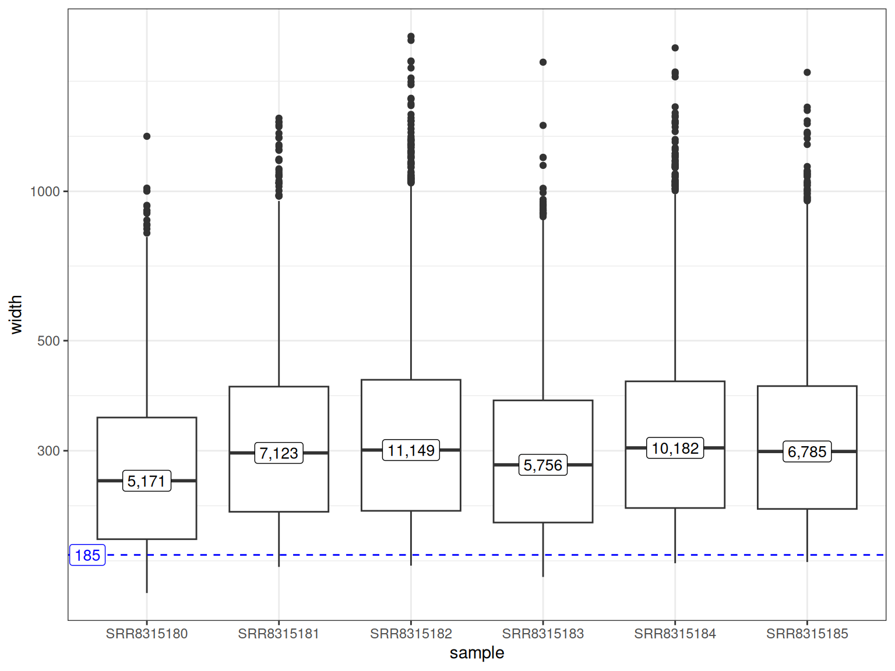
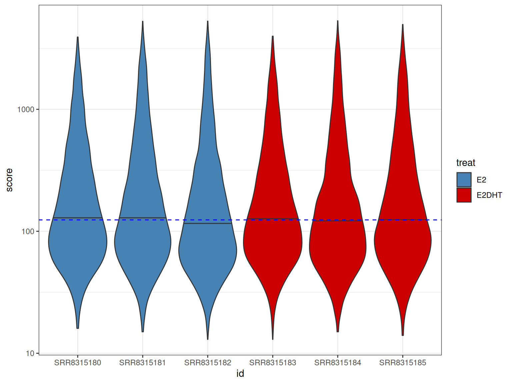
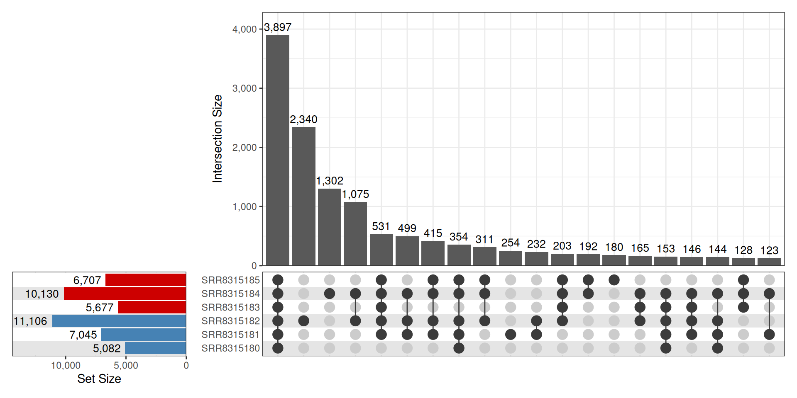
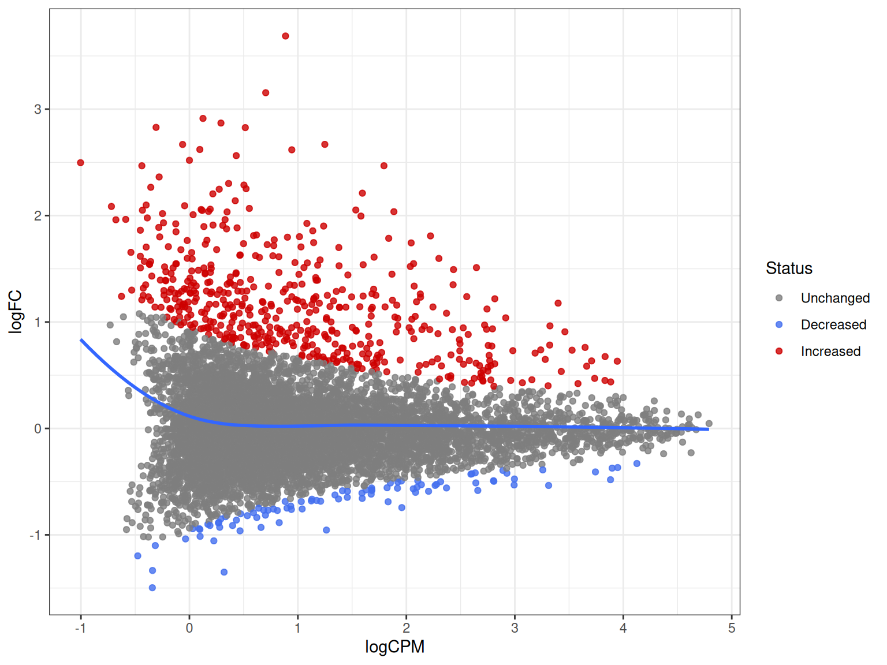
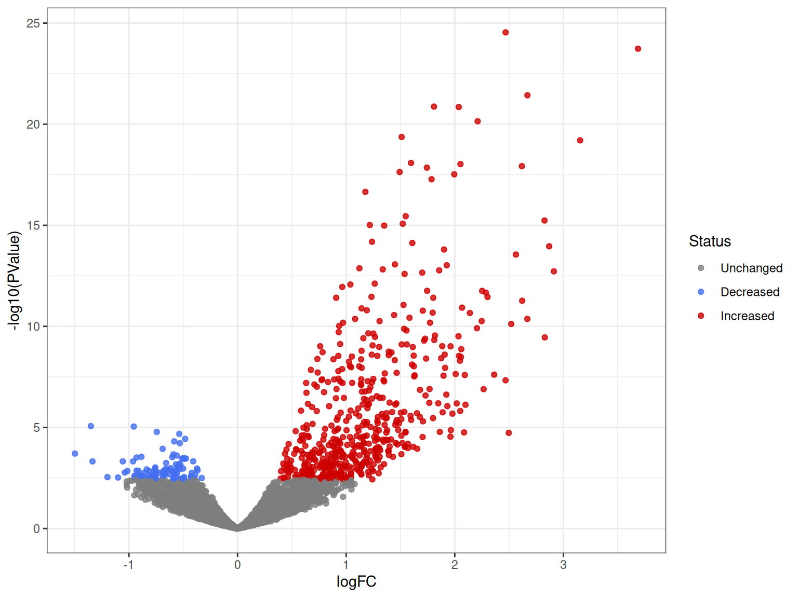
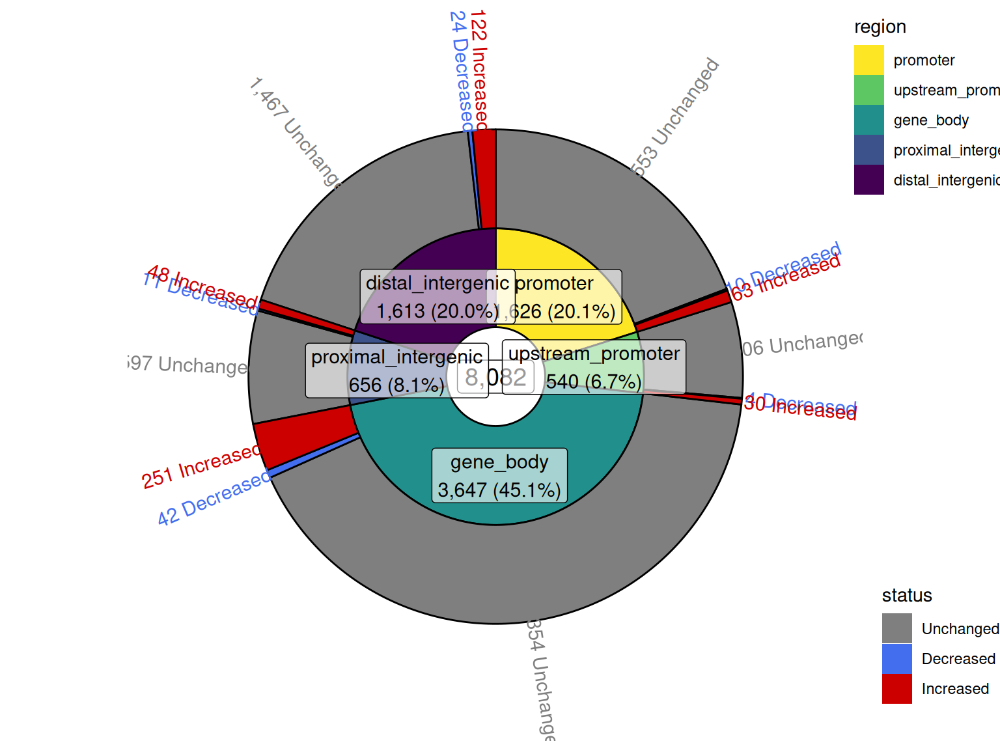
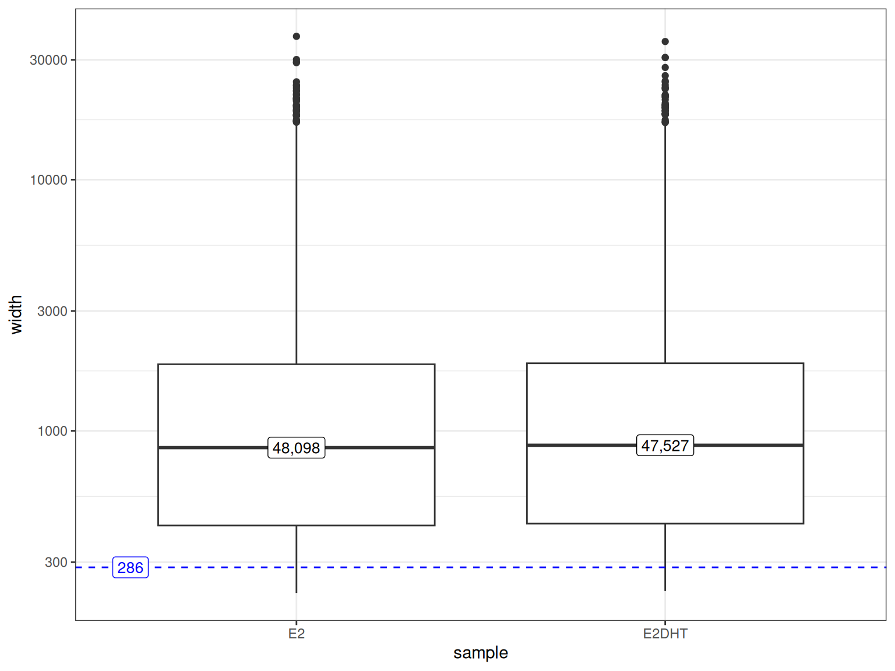
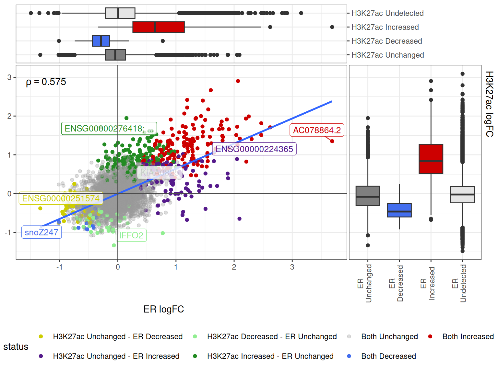

library(tidyverse)
library(extraChIPsWorkshop) # Replace with extraChIPs in your own analysis
library(rtracklayer)
library(plyranges)
library(Rsamtools)
library(csaw)
library(BiocParallel)
library(DFplyr)
library(quantro)
library(qsmooth)
library(edgeR)
library(magrittr)
library(patchwork)
library(ggrepel)
library(glue)
library(viridisLite)
library(pander)
theme_set(theme_bw())The package extraChIPs
Dr Stevie Pederson (They/Them)
Black Ochre Data Labs
The Kids Research Institute Australia / ANU
Black Ochre Data Labs
The Kids Research Institute Australia / ANU
May 20, 2026
Setup
Material can be found under the Articles tab at https://smped.github.io/extraChIPsWorkshop/
3 Options for today’s workshop:
- Please log into the workshop resources provided
- To run locally install the package:
BiocManager::install("smped/extraChIPsWorkshop") - Alternatively run the docker container locally
(login: rstudio)
Today’s Material
- Will analyses two ChIP targets under control vs treated
- E2 (Control) vs E2+DHT (treated)
- ER (Estrogen Receptor) + H3K27ac
- Both from same passages & experiments
- Does testosterone treatment (DHT) impact binding of the Estrogen Receptor and gene regulation in beast cancer (Hickey et al. 2021)
ChIP-Seq Primer

Sourced from Tamang (2024)
Prior Familiarity
GenomicRangesandGenomicRangesListobjectsSummarizedExperimentobjects- The package
ggplot2 - The use of either
|>or%>%as pipe operators- I have relied on the
.syntax for a handful of lines
- I have relied on the
The package extraChIPs
- Originally a collection of functions to enable a
snakemakeworkflow (GRAVI, unpublished) - Focus on Differential Signal Analysis in >1 comparison
- Some core functions under the hood:
reduceMC,setdiffMC,unionMC\(\implies\) retain mcols fromxas_tibbleparses GRanges as character columnrangeplotAssay*: plotting Densities, PCA, RLEbestOverlapandpropOverlapfor comparing ranges to features
Starting the Analysis
Loading All Packages
Defining the Correct Genome
## This is a helper function with some common genomes predefined
## - Turn the chr prefix off by setting `chr = FALSE`
## - Include chrM by adding `mito = "M` (or whichever you have)
## No scaffolds/haplotypes etc are included
## Best practice is still to use BAM headers
## Pull requests with any additional genomes welcome
sq <- defineSeqinfo("GRCh37", chr = TRUE)
sqSeqinfo object with 24 sequences from GRCh37 genome:
seqnames seqlengths isCircular genome
chr1 249250621 FALSE GRCh37
chr2 243199373 FALSE GRCh37
chr3 198022430 FALSE GRCh37
chr4 191154276 FALSE GRCh37
chr5 180915260 FALSE GRCh37
... ... ... ...
chr20 63025520 FALSE GRCh37
chr21 48129895 FALSE GRCh37
chr22 51304566 FALSE GRCh37
chrX 155270560 FALSE GRCh37
chrY 59373566 FALSE GRCh37Loading Gene & Transcript Definitions
- These annotations have been prepared to play nicely with
sq - May take some fiddling in the real world
- e.g.
subset(gtf, seqnames %in% seqlevels(sq))
- e.g.
- Setting up
seqinfocan be a bit fiddly, but is vital
Defining Genomic Regions and Features
split_gtf <- split(gtf, gtf$type)
regions <- defineRegions(
genes = split_gtf$gene,
transcripts = split_gtf$transcript,
exons = split_gtf$exon,
intron = FALSE
)
names(regions)[1] "promoter" "upstream_promoter" "gene_body"
[4] "proximal_intergenic" "distal_intergenic" - Define promoters, upstream promoters, gene bodies, proximal & distal intergenic
- Setting
intron = TRUEwill splitgene_bodyintointron&exon - Maps to the most suitable gene(s)
- Setting
- Ranges of promoters around TSS can be changed
- Any additional annotations (e.g. enhancers) can be incorporated (
setdiffMC)
Black and Grey Listed Regions
importPeaks()takes multiple files of the same type \(\implies\)GRangesList- Only sequences in
seqinfo = sqare returned
Fixed Width Peaks
Defining Peaks
- Each sample will have a set of peaks called, e.g.
macs2 callpeak(Zhang et al. 2008) - Peak ranges will vary between samples:
- Different centre positions + different widths
- Need to define consistent ranges across all samples
- Known as a consensus peaks
- Setting all peaks to the same width \(\implies\) easier downstream analysis
- No fixed strategy \(\implies\) must be sensible
- How to manage peaks only found in a fraction of one treatment group
Defining Samples
treat_levels <- c("E2", "E2DHT")
samples <- tibble(
id = paste0("SRR83151", seq(80, 92)),
target = case_when(
id %in% paste0("SRR83151", seq(80, 85)) ~ "ER", # The first 6 are ER
id %in% paste0("SRR83151", seq(86, 91)) ~ "H3K27ac", # The next 6 are H3K27ac
id == "SRR8315192" ~ "input"
),
treat = case_when(
id %in% paste0("SRR83151", seq(80, 82)) ~ "E2", # The first 3 are E2 in each
id %in% paste0("SRR83151", seq(86, 88)) ~ "E2",
id %in% paste0("SRR83151", seq(83, 85)) ~ "E2DHT", # The next 3 are E2+DHT
id %in% paste0("SRR83151", seq(89, 91)) ~ "E2DHT",
TRUE ~ NA
) %>%
factor(treat_levels)
) %>%
split(.$target) # Here's a line where I relied on `.`The ER Peaks
- This is the standard
narrowPeakformatscoreetc are about confidence in peak callpeakis expected centre within range
- Both the range and expected centre will vary between samples
The ER Peaks
er_peaks <- importPeaks(
## `blacklist = exclude_ranges` will drop any overlapping ranges
## `seqinfo - sq` will exclude peaks not within the specified chromosomes
## Setting `centre = TRUE` will calculate absolute position for centre
samples$ER$peak_path, blacklist = exclude_ranges, seqinfo = sq, centre = TRUE
)
names(er_peaks) <- samples$ER$id
er_peaksGRangesList object of length 6:
$SRR8315180
GRanges object with 5171 ranges and 6 metadata columns:
seqnames ranges strand | score
<Rle> <IRanges> <Rle> | <numeric>
SRR8315180_peak_28 chr1 877234-877456 * | 38
SRR8315180_peak_29 chr1 1008956-1009437 * | 1912
SRR8315180_peak_30 chr1 1014869-1015041 * | 129
SRR8315180_peak_31 chr1 1051392-1051846 * | 517
SRR8315180_peak_32 chr1 1608130-1608331 * | 435
... ... ... ... . ...
SRR8315180_peak_5714 chrX 149461675-149462150 * | 60
SRR8315180_peak_5715 chrX 150017497-150017724 * | 69
SRR8315180_peak_5716 chrX 153386636-153386970 * | 707
SRR8315180_peak_5717 chrX 153769255-153769609 * | 124
SRR8315180_peak_5718 chrX 153877908-153878323 * | 977
signalValue pValue qValue peak centre
<numeric> <numeric> <numeric> <numeric> <numeric>
SRR8315180_peak_28 5.15474 7.1984 3.80463 82 877316
SRR8315180_peak_29 49.33472 196.3941 191.21231 249 1009205
SRR8315180_peak_30 9.27854 16.6766 12.94753 70 1014939
SRR8315180_peak_31 22.68087 56.0068 51.73955 190 1051582
SRR8315180_peak_32 20.10350 47.7562 43.57030 129 1608259
... ... ... ... ... ...
SRR8315180_peak_5714 5.07929 9.55047 6.03976 161 149461836
SRR8315180_peak_5715 6.70117 10.52204 6.97044 79 150017576
SRR8315180_peak_5716 23.74002 75.14732 70.73027 169 153386805
SRR8315180_peak_5717 8.70414 16.18661 12.47052 222 153769477
SRR8315180_peak_5718 36.08321 102.36316 97.76498 175 153878083
-------
seqinfo: 24 sequences from GRCh37 genome
...
<5 more elements>The ER Peaks

The ER Peaks
treat_colours <- setNames(
c("steelblue", "red3"), treat_levels
)
plotGrlCol(
er_peaks,
var = "score", geom = "violin",
quantile.linetype = 1, quantiles = 0.5,
.id = "id", df = samples$ER,
fill = "treat",
q = 0.5, q_size = NULL,
total_geom = "none"
) +
scale_fill_manual(
values = treat_colours
) + scale_y_log10()
The ER Peaks

Consensus Peaks
- Looking for confident binding sites that change
- Not binary on/off sites
- Sites confidently found in either condition?
- Maybe 2 of 3 samples?
- Consensus sites for each condition
- Merge across conditions
- How do we define the boundaries of the range?
- What do we do with the peak centers?
Consensus Peaks
er_peaks %>%
subset(samples$ER$treat == "E2") %>%
makeConsensus(p = 2/3, var = "centre") # This will retain the centre columnGRanges object with 6895 ranges and 5 metadata columns:
seqnames ranges strand | centre
<Rle> <IRanges> <Rle> | <NumericList>
[1] chr1 877234-877467 * | 877316,877312
[2] chr1 1008931-1009980 * | 1009205,1009212,1009207
[3] chr1 1014802-1015113 * | 1014939,1014911,1014962
[4] chr1 1051286-1051898 * | 1051582,1051604,1051593
[5] chr1 1368447-1368760 * | 1368595,1368569
... ... ... ... . ...
[6891] chrX 150997811-150998098 * | 150997954,150997946
[6892] chrX 153386536-153387087 * | 153386805,153386823,153386810
[6893] chrX 153648255-153648514 * | 153648423,153648385
[6894] chrX 153769134-153769638 * | 153769477,153769374,153769393
[6895] chrX 153877847-153878494 * | 153878083,153878075,153878084
SRR8315180 SRR8315181 SRR8315182 n
<logical> <logical> <logical> <numeric>
[1] TRUE TRUE FALSE 2
[2] TRUE TRUE TRUE 3
[3] TRUE TRUE TRUE 3
[4] TRUE TRUE TRUE 3
[5] FALSE TRUE TRUE 2
... ... ... ... ...
[6891] FALSE TRUE TRUE 2
[6892] TRUE TRUE TRUE 3
[6893] FALSE TRUE TRUE 2
[6894] TRUE TRUE TRUE 3
[6895] TRUE TRUE TRUE 3
-------
seqinfo: 24 sequences from GRCh37 genomeConsensus Peaks
er_peaks %>%
subset(samples$ER$treat == "E2") %>%
makeConsensus(p = 2/3, var = "centre") %>%
mutate(centre = map_dbl(centre, mean)) ## Take the mean of all centersGRanges object with 6895 ranges and 5 metadata columns:
seqnames ranges strand | centre SRR8315180 SRR8315181
<Rle> <IRanges> <Rle> | <numeric> <logical> <logical>
[1] chr1 877234-877467 * | 877314 TRUE TRUE
[2] chr1 1008931-1009980 * | 1009208 TRUE TRUE
[3] chr1 1014802-1015113 * | 1014937 TRUE TRUE
[4] chr1 1051286-1051898 * | 1051593 TRUE TRUE
[5] chr1 1368447-1368760 * | 1368582 FALSE TRUE
... ... ... ... . ... ... ...
[6891] chrX 150997811-150998098 * | 150997950 FALSE TRUE
[6892] chrX 153386536-153387087 * | 153386813 TRUE TRUE
[6893] chrX 153648255-153648514 * | 153648404 FALSE TRUE
[6894] chrX 153769134-153769638 * | 153769415 TRUE TRUE
[6895] chrX 153877847-153878494 * | 153878081 TRUE TRUE
SRR8315182 n
<logical> <numeric>
[1] FALSE 2
[2] TRUE 3
[3] TRUE 3
[4] TRUE 3
[5] TRUE 2
... ... ...
[6891] TRUE 2
[6892] TRUE 3
[6893] TRUE 2
[6894] TRUE 3
[6895] TRUE 3
-------
seqinfo: 24 sequences from GRCh37 genomeConsensus Peaks
Consensus Peaks
GRanges object with 8082 ranges and 4 metadata columns:
seqnames ranges strand | centre E2 E2DHT
<Rle> <IRanges> <Rle> | <integer> <logical> <logical>
[1] chr1 877234-877467 * | 877314 TRUE FALSE
[2] chr1 1008769-1009980 * | 1009206 TRUE TRUE
[3] chr1 1014802-1015208 * | 1014941 TRUE TRUE
[4] chr1 1051286-1051898 * | 1051583 TRUE TRUE
[5] chr1 1368442-1368760 * | 1368562 TRUE TRUE
... ... ... ... . ... ... ...
[8078] chrX 153386536-153387087 * | 153386812 TRUE TRUE
[8079] chrX 153648233-153648534 * | 153648391 TRUE TRUE
[8080] chrX 153769134-153769638 * | 153769419 TRUE TRUE
[8081] chrX 153769924-153770131 * | 153770035 FALSE TRUE
[8082] chrX 153877847-153878508 * | 153878070 TRUE TRUE
n
<numeric>
[1] 1
[2] 2
[3] 2
[4] 2
[5] 2
... ...
[8078] 2
[8079] 2
[8080] 2
[8081] 1
[8082] 2
-------
seqinfo: 24 sequences from GRCh37 genomeConsensus Peaks
er_peaks %>%
split(samples$ER$treat) %>%
lapply(
\(peaks) {
peaks %>%
makeConsensus(p = 2 / 3, var = "centre") %>%
mutate(centre = map_dbl(centre, mean))
}
) %>%
GRangesList() %>%
makeConsensus(var = "centre") %>%
mutate(centre = as.integer(map_dbl(centre, mean))) %>%
mutate(
region = bestOverlap(., regions) %>% fct(names(regions))
)Consensus Peaks
GRanges object with 8082 ranges and 5 metadata columns:
seqnames ranges strand | centre E2 E2DHT
<Rle> <IRanges> <Rle> | <integer> <logical> <logical>
[1] chr1 877234-877467 * | 877314 TRUE FALSE
[2] chr1 1008769-1009980 * | 1009206 TRUE TRUE
[3] chr1 1014802-1015208 * | 1014941 TRUE TRUE
[4] chr1 1051286-1051898 * | 1051583 TRUE TRUE
[5] chr1 1368442-1368760 * | 1368562 TRUE TRUE
... ... ... ... . ... ... ...
[8078] chrX 153386536-153387087 * | 153386812 TRUE TRUE
[8079] chrX 153648233-153648534 * | 153648391 TRUE TRUE
[8080] chrX 153769134-153769638 * | 153769419 TRUE TRUE
[8081] chrX 153769924-153770131 * | 153770035 FALSE TRUE
[8082] chrX 153877847-153878508 * | 153878070 TRUE TRUE
n region
<numeric> <factor>
[1] 1 promoter
[2] 2 promoter
[3] 2 proximal_intergenic
[4] 2 promoter
[5] 2 promoter
... ... ...
[8078] 2 gene_body
[8079] 2 promoter
[8080] 2 promoter
[8081] 1 promoter
[8082] 2 promoter
-------
seqinfo: 24 sequences from GRCh37 genomeConsensus Peaks
consensus_peaks <- er_peaks %>%
split(samples$ER$treat) %>%
lapply(
\(peaks) {
peaks %>%
makeConsensus(p = 2 / 3, var = "centre") %>%
mutate(centre = map_dbl(centre, mean))
}
) %>%
GRangesList() %>%
makeConsensus(var = "centre") %>%
mutate(centre = as.integer(map_dbl(centre, mean))) %>%
mutate(
region = bestOverlap(., regions) %>% fct(names(regions))
) %>%
mapByFeature(genes = split_gtf$gene, prom = regions$promoter)Consensus Peaks
GRanges object with 8082 ranges and 7 metadata columns:
seqnames ranges strand | centre E2 E2DHT
<Rle> <IRanges> <Rle> | <integer> <logical> <logical>
[1] chr1 877234-877467 * | 877314 TRUE FALSE
[2] chr1 1008769-1009980 * | 1009206 TRUE TRUE
[3] chr1 1014802-1015208 * | 1014941 TRUE TRUE
[4] chr1 1051286-1051898 * | 1051583 TRUE TRUE
[5] chr1 1368442-1368760 * | 1368562 TRUE TRUE
... ... ... ... . ... ... ...
[8078] chrX 153386536-153387087 * | 153386812 TRUE TRUE
[8079] chrX 153648233-153648534 * | 153648391 TRUE TRUE
[8080] chrX 153769134-153769638 * | 153769419 TRUE TRUE
[8081] chrX 153769924-153770131 * | 153770035 FALSE TRUE
[8082] chrX 153877847-153878508 * | 153878070 TRUE TRUE
n region gene_id
<numeric> <factor> <CharacterList>
[1] 1 promoter ENSG00000187634.13_15
[2] 2 promoter ENSG00000237330.3_8
[3] 2 proximal_intergenic ENSG00000131591.18_14
[4] 2 promoter ENSG00000131591.18_14
[5] 2 promoter ENSG00000225285.1_9,ENSG00000179403.12_8
... ... ... ...
[8078] 2 gene_body ENSG00000169057.25_18
[8079] 2 promoter ENSG00000102125.17_18
[8080] 2 promoter ENSG00000269335.7_14
[8081] 1 promoter ENSG00000269335.7_14
[8082] 2 promoter ENSG00000275882.1_6
gene_name
<CharacterList>
[1] SAMD11
[2] RNF223
[3] C1orf159
[4] C1orf159
[5] LINC01770,VWA1
... ...
[8078] MECP2
[8079] TAFAZZIN
[8080] IKBKG
[8081] IKBKG
[8082] IKBKGP1
-------
seqinfo: 24 sequences from GRCh37 genomeConsensus Peaks
Consensus Peaks
Differential Signal Analysis
Differential Signal (Binding) Analysis
- Already characterised genes and features ER is bound
- Where does it change?
- What genes are likely to be impacted?
\(\implies\) Differential Signal Analysis
Differential Signal (Binding) Analysis
- Already defined consensus peaks
- Ensures consistent analysis across samples
- Centered at best estimate of binding site
- Set fixed-width regions
- Same width across all peaks
- Represent the original consensus peaks
- Enables easier downstream analysis
Centered Peaks
- From plot of widths 400bp is a good upper width
Counts Within Peaks
- Need BAM files to count alignments
- Too large for a workshop \(\implies\) has been pre-prepared
- Example code given in workshop
- Was run on a laptop but not guaranteed
Alignments Vs Library Size
- Most alignments not in peaks
colData(er_se) %>%
as_tibble() %>%
mutate(
counted = assay(er_se, "counts") |> colSums(),
FRIP = counted / totals
)# A tibble: 6 × 9
id bam.files totals ext rlen target treat counted FRIP
<chr> <chr> <int> <int> <int> <chr> <fct> <dbl> <dbl>
1 SRR8315180 SRR8315180.bam 16373508 175 75 ER E2 285598 0.0174
2 SRR8315181 SRR8315181.bam 17581871 175 75 ER E2 384867 0.0219
3 SRR8315182 SRR8315182.bam 17641037 175 75 ER E2 479476 0.0272
4 SRR8315183 SRR8315183.bam 16208256 175 75 ER E2DHT 308392 0.0190
5 SRR8315184 SRR8315184.bam 18270619 175 75 ER E2DHT 471069 0.0258
6 SRR8315185 SRR8315185.bam 18061306 175 75 ER E2DHT 367648 0.0204Adding logCPM
er_seis aSummarizedExperiment- Can easily add assays as appropriate
Checking Count Densities
## The raw counts (using log1p)
plotAssayDensities(er_se, assay = "counts", colour = "treat", trans = "log1p") +
scale_colour_manual(values = treat_colours)
## After library size normalisation
plotAssayDensities(er_se, assay = "logCPM", colour = "treat") +
scale_colour_manual(values = treat_colours)Checking RLE
PCA
Normalisation
- Most commonly, we use the total alignments as library size
- Can use counts within peaks only \(\implies\) need a good reason
- No normalisation on counts \(\implies\) library size only
- Can also use TMM, RLE etc (Robinson and Oshlack 2010; Anders and Huber 2010)
- Key assumption: library-sizes roughly constant
- Not always applicable for ChIP-Seq (is mostly for RNA-Seq)
- AR is sequestered in cytoplasm until androgens are present
Checking Assumptions
- The package
quantrois very helpful for this question (Hicks and Irizarry 2015) - If distributions are radically different \(\implies\) only library-size appropriate
Model Fitting
fitAssayDiff()can fitmethod = c("qlf", "wald", "lt")edgeR::glmQLF()(Chen et al. 2025),DESeq2::nbinomWaldTest()(Love, Huber, and Anders 2014) orlimma::lmFit()(limma-trend) (Law et al. 2014)- limma-trend is fitted on logCPM values
DiffBindstandard is RLE-normalisation + DESeq2 (Ross-Innes et al. 2012)extraChIPsresults are identical
- Can also apply range-based H0 (McCarthy and Smyth 2009)
Model Fitting
X <- model.matrix(~treat, data = colData(er_se))
er_diffsig <- er_se %>%
fitAssayDiff(design = X, norm = "TMM", asRanges = TRUE, method = "qlf") %>%
## Add a column assigning each peak as Increased, Decreased, Unchanged etc
addDiffStatus(drop = TRUE)
table(er_diffsig$status)
Unchanged Decreased Increased
7477 91 514 MA Plots
status_colours <- c(
Undetected = "grey90", Unchanged = "grey50",
Decreased = "royalblue2", Increased = "red3"
)
er_diffsig %>%
as_tibble() %>%
ggplot(aes(logCPM, logFC)) +
geom_point(aes(colour = status), alpha = 0.8) +
geom_smooth(se = FALSE, method = "loess") +
labs(colour = "Status") +
scale_colour_manual(values = status_colours) MA Plots

Volcano Plots
Volcano Plots

Donut Plots
er_diffsig %>%
plotSplitDonut(
inner = "region", outer = "status", label_size = 4,
inner_palette = region_colours,
outer_palette = status_colours,
inner_glue = "{str_wrap(.data[[inner]], 15)}\n{comma(n)} ({percent(p,0.1)})",
outer_glue = "{comma(n)} {.data[[outer]]}",
inner_label_alpha = 0.6,
outer_label_colour = "palette", outer_rotate = TRUE,
outer_label = "text", outer_min_p = 0, outer_nudge_r = 0.6
)Donut Plots

Sliding Windows
H3K27ac
- In addition to ER, H3K27ac was also a ChIP target
- Have the same two conditions
- Indicates a transcriptionally active region (i.e. promoter/enhancer)
- Much broader peaks
- Can have valleys where other TFs are bound to the DNA
- Potentially better suited to sliding window analysis
H3K27ac
- Start with merged treatment-specific peaks
- Produced by
macs2 callpeakset to narrow peak gluesyntax can be used to name during parsing
- Produced by
f <- paste(
"H3K27ac", c("E2", "E2DHT"), "merged_peaks.narrowPeak.gz", sep = "_"
)
h3k27ac_peaks <- system.file(
"extdata/peaks", f, package = "extraChIPsWorkshop"
) |>
importPeaks(
seqinfo = sq, blacklist = exclude_ranges,
glueNames = "{basename(x) |> str_remove('_merged.+') |> str_remove('H3K27ac_')}"
)H3K27ac Peak Widths

H3K27ac Counts
- Use sliding windows across the entire genome
- Again using
csawinfrastructure (Lun and Smyth 2016) - Windows with low counts discarded
- Again using
- Very resource intensive
- 6x BAM ran on 16Gb laptop (only just)
- After obtaining genomic windows \(\implies\) discard uninformative windows
- Analogous to discarding ‘undetected’ genes in RNA-Seq
csawoffers multiplefilterWindows*options
H3K27ac Counts
dualFilter()uses a set of guide/reference ranges expected to contain signal- Select values for signal/input and min(signal) based on guide ranges
- Values would retain q = 50%, 90% etc of guide ranges
- 50% is restrictive, 90% is inclusive
- Very resource intensive (Ran on 16Gb + 4Gb Swap)
- Flexible for different target types, e.g. RNAPolII
- Ranges can be from independent experiment
- No input sample only uses min(signal)
H3K27ac Counts
## Pre-filtered counts provided in package
h3k27ac_se <- system.file(
"extdata/counts", "h3k27ac_se.rds", package = "extraChIPsWorkshop"
) |> read_rds()
## Now add a logCPM assay
assay(h3k27ac_se, "logCPM") <- h3k27ac_se %>%
cpm(log = TRUE, lib.size = h3k27ac_se$totals) %>%
set_rownames(rownames(h3k27ac_se)) Checking Densities
Additional Plots
- Try making RLE plots:
plotAssayRle() - PCA plots:
plotAssayPCA()
Normalisation
- Check if libraries drawn from same distributions
Normalisation
- Can apply any normalisation strategy (TMM, RLE etc)
- Less common alternative: Smooth Quantile Normalisation (Hicks et al. 2018)
- Uses weighting strategy across expression quantiles
- Relatively robust to diverging sample distributions
- Well-suited for sliding windows before merging
Smooth Quantile Normalisation
- Let’s normalise the logCPM assay
- Add it as the assay
qsmooth
Smooth Quantile Normalisation
Differential Signal Analysis
- Perform analysis on all windows
- Use
limma-trendon normalised logCPM - Need to set normalisation to “none” (already done)
- Use
- Merge overlapping windows
- Combined PValue: Harmonic Mean (Wilson 2019)
- Estimates of logFC, logCPM
csawalso offers multiple approaches- Wrappers in
extrachIPsto standardise output structure
- Wrappers in
Differential Signal Analysis
- Fit on all windows
Differential Signal Analysis
- Now merge overlapping windows
h3k27ac_diffsig <- h3k27ac_diffwin %>%
## Merge using the HMP, retaining those with 3 or more
mergeByHMP(hm_pre = "", min_win = 3) %>%
## Add status column
addDiffStatus(sig_col = "PValue_fdr", drop = TRUE) %>%
## Assign a genomic region
mutate(region = bestOverlap(., regions) %>% fct(names(regions))) %>%
## Map each merged region to a gene
mapByFeature(genes = split_gtf$gene, prom = regions$promoter)Inspection of Results
- MA Plots
- Volcano Plots
- Donut Plots
Integration of Results
Data Integration
- Changes in both H3K27ac and ER highest priority targets
- How do the two ChIP targets change together?
- Can we visualise in a browser-style layout
Data Integration
## Form a named GRangesList with identical columns.
## This relies on plyranges::select to harmonise columns
both_diffsig <- GRangesList(
ER = er_diffsig %>%
select(logFC, logCPM, PValue, FDR, status, region, starts_with("gene")),
H3K27ac = h3k27ac_diffsig %>%
select(
logFC, logCPM, PValue = PValue, FDR = PValue_fdr, status, region,
starts_with("gene")
)
) Plotting Pairwise Changes
## Define colours for Up/Down/Unchanged/Undetected for both targets individually
combined_status_colours <- c(
setNames(status_colours, paste("ER", names(status_colours))),
setNames(status_colours, paste("H3K27ac", names(status_colours)))
)
## Define colours for both targets together
grp_colours <- c(
"yellow3", "purple4", # ER Unchanged
"lightgreen", "forestgreen", # H3K27ac Unchanged
"#99999955", "royalblue2", "red3"# Both Unchanged/Decreased/Increased
) Plotting Pairwise Changes
both_diffsig %>%
plotPairwise(
"logFC", colour = "status", label = "gene_name", label_alpha = 0.8
) +
geom_hline(yintercept = 0, colour = "grey30") +
geom_vline(xintercept = 0, colour = "grey30") +
scale_colour_manual(values = grp_colours) +
scale_fill_manual(values = combined_status_colours) +
guides(fill = "none") +
theme(
legend.position = "bottom",
ggside.axis.text.x.bottom = element_text(angle = 90, vjust = 0.25)
) Plotting Pairwise Changes

Mapping Columns Across Targets
both_mapped_status <- both_diffsig %>%
mapGrlCols(
var = c("status", "region", "logFC"), collapse = "gene_name",
method = "coverage", p = 1
)
both_mapped_statusGRanges object with 5419 ranges and 7 metadata columns:
seqnames ranges strand | ER_status H3K27ac_status
<Rle> <IRanges> <Rle> | <factor> <factor>
[1] chr1 877114-877513 * | Unchanged Unchanged
[2] chr1 1009006-1009405 * | Unchanged Unchanged
[3] chr1 1014741-1015140 * | Unchanged Unchanged
[4] chr1 1051383-1051782 * | Unchanged Unchanged
[5] chr1 1368362-1368761 * | Unchanged Unchanged
... ... ... ... . ... ...
[5415] chrX 149736801-149737047 * | Unchanged Unchanged
[5416] chrX 150017389-150017788 * | Unchanged Unchanged
[5417] chrX 153386612-153387011 * | Unchanged Unchanged
[5418] chrX 153769219-153769618 * | Unchanged Unchanged
[5419] chrX 153769835-153770234 * | Unchanged Unchanged
ER_region H3K27ac_region ER_logFC H3K27ac_logFC
<factor> <factor> <numeric> <numeric>
[1] promoter promoter -0.48323153 -0.1429666
[2] promoter gene_body 0.09522249 0.1112011
[3] proximal_intergenic proximal_intergenic 0.10654786 -0.0768317
[4] promoter promoter 0.00113261 -0.1786717
[5] promoter promoter -0.11358266 -0.0518217
... ... ... ... ...
[5415] promoter gene_body -0.2733495 0.18067806
[5416] gene_body gene_body -0.2101436 -0.32185709
[5417] gene_body gene_body -0.1868168 -0.35128058
[5418] promoter promoter -0.0377612 -0.00176551
[5419] promoter promoter 0.0539533 -0.00176551
gene_name
<character>
[1] SAMD11
[2] RNF223
[3] C1orf159
[4] C1orf159
[5] LINC01770; VWA1
... ...
[5415] MTM1
[5416] CD99L2
[5417] MECP2
[5418] G6PD; IKBKG
[5419] G6PD; IKBKG
-------
seqinfo: 24 sequences from GRCh37 genomeVisualising using Gviz
- plotHFGC: HiC, Features, Gene Models, Coverage
- All layers optional
- Always show in that order
- Coverage requires
BigWigFiles- Each target as a
BigWigFilelist\(\implies\) overlaid - Should be merged across samples
- List of BigWigFileLists \(\implies\) separate tracks
- Each target as a
- Can annotate ChIP-Seq coverage by status
References
Anders, Simon, and Wolfgang Huber. 2010. “Differential Expression Analysis for Sequence Count Data.” Genome Biol. 11 (10): R106.
Chen, Yunshun, Lizhong Chen, Aaron T L Lun, Pedro Baldoni, and Gordon K Smyth. 2025. “edgeR V4: Powerful Differential Analysis of Sequencing Data with Expanded Functionality and Improved Support for Small Counts and Larger Datasets.” Nucleic Acids Research 53 (2): gkaf018. https://doi.org/10.1093/nar/gkaf018.
Hickey, Theresa E, Luke A Selth, Kee Ming Chia, Geraldine Laven-Law, Heloisa H Milioli, Daniel Roden, Shalini Jindal, et al. 2021. “The Androgen Receptor Is a Tumor Suppressor in Estrogen Receptor-Positive Breast Cancer.” Nat. Med. 27 (2): 310–20.
Hicks, Stephanie C, and Rafael A Irizarry. 2015. “Quantro: A Data-Driven Approach to Guide the Choice of an Appropriate Normalization Method.” Genome Biol. 16 (1): 117.
Hicks, Stephanie C, Kwame Okrah, Joseph N Paulson, John Quackenbush, Rafael A Irizarry, and Héctor Corrada Bravo. 2018. “Smooth Quantile Normalization.” Biostatistics 19 (2): 185–98.
Law, Charity W, Yunshun Chen, Wei Shi, and Gordon K Smyth. 2014. “Voom: Precision Weights Unlock Linear Model Analysis Tools for RNA-Seq Read Counts.” Genome Biol. 15 (2): R29.
Love, Michael I., Wolfgang Huber, and Simon Anders. 2014. “Moderated Estimation of Fold Change and Dispersion for RNA-Seq Data with DESeq2.” Genome Biology 15: 550. https://doi.org/10.1186/s13059-014-0550-8.
Lun, Aaron T L, and Gordon K Smyth. 2016. “Csaw: A Bioconductor Package for Differential Binding Analysis of ChIP-Seq Data Using Sliding Windows.” Nucleic Acids Res. 44 (5): e45.
McCarthy, Davis J, and Gordon K Smyth. 2009. “Testing Significance Relative to a Fold-Change Threshold Is a TREAT.” Bioinformatics 25 (6): 765–71.
Robinson, Mark D, and Alicia Oshlack. 2010. “A Scaling Normalization Method for Differential Expression Analysis of RNA-Seq Data.” Genome Biol. 11 (3): R25.
Ross-Innes, Caryn S., Rory Stark, Andrew E. Teschendorff, Kelly A. Holmes, H. Raza Ali, Mark J. Dunning, Gordon D. Brown, et al. 2012. “Differential Oestrogen Receptor Binding Is Associated with Clinical Outcome in Breast Cancer.” Nature 481: –4. http://www.nature.com/nature/journal/v481/n7381/full/nature10730.html.
Tamang, Sanju. 2024. “ChIP Sequencing (ChIP-Seq): Principle, Steps, Uses, Diagram.” https://microbenotes.com/chip-sequencing/; Sagar Aryal.
Wilson, Daniel J. 2019. “The Harmonic Mean p-Value for Combining Dependent Tests.” Proceedings of the National Academy of Sciences U.S.A. 116 (4): 1195–1200. https://www.pnas.org/content/116/4/1195.
Zhang, Yong, Tao Liu, Clifford A Meyer, Jérôme Eeckhoute, David S Johnson, Bradley E Bernstein, Chad Nusbaum, et al. 2008. “Model-Based Analysis of ChIP-Seq (MACS).” Genome Biol. 9 (9): R137.